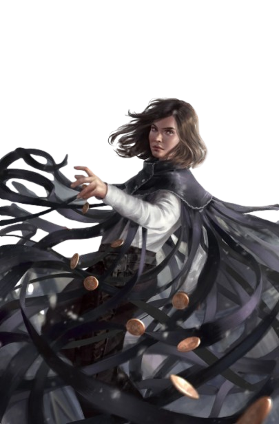

A veces me preocupa no ser el héroe por el que todo el mundo me toma. Los filósofos me aseguran que este es el momento, que las señales se han hecho realidad. Pero yo me sigo preguntando si no se habrán equivocado de hombre. Son tantas las personas que dependen de mí... Dicen que tengo en mis manos el futuro del mundo entero. ¿Qué pensarían si supieran que su paladín, el Héroe de las Eras, su salvador, dudó de sí mismo? Tal vez no se sorprenderían en absoluto. En cierto modo, eso es lo que más me preocupa. Quizá también ellos duden, en el fondo de sus corazones, al igual que yo. Cuando me miran, ¿será un mentiroso lo que ven?